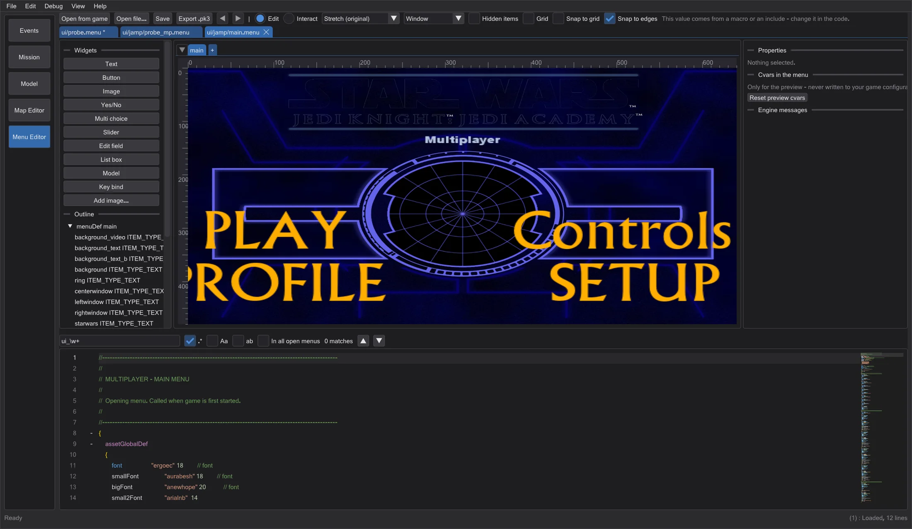
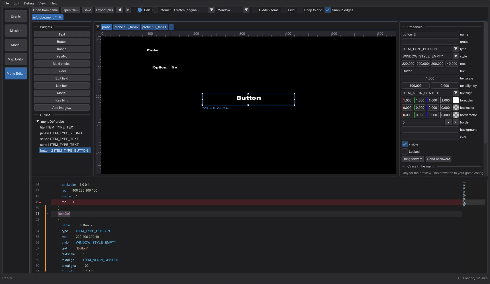
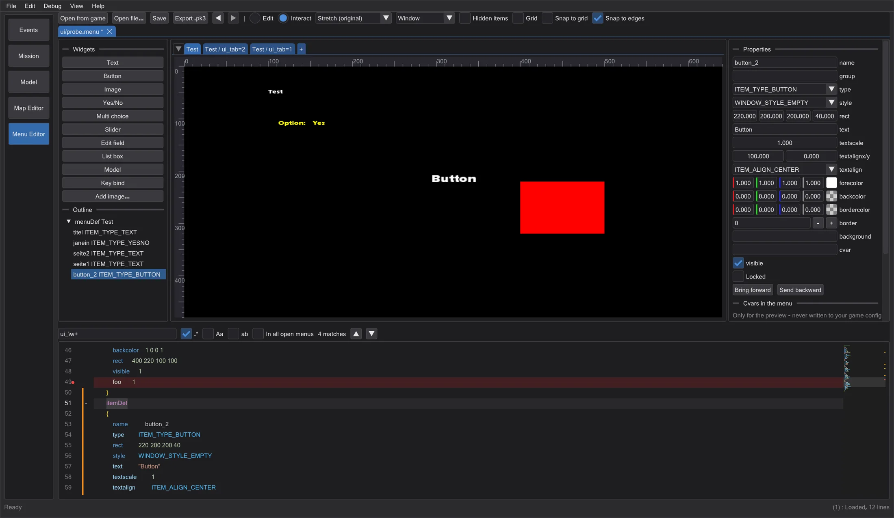
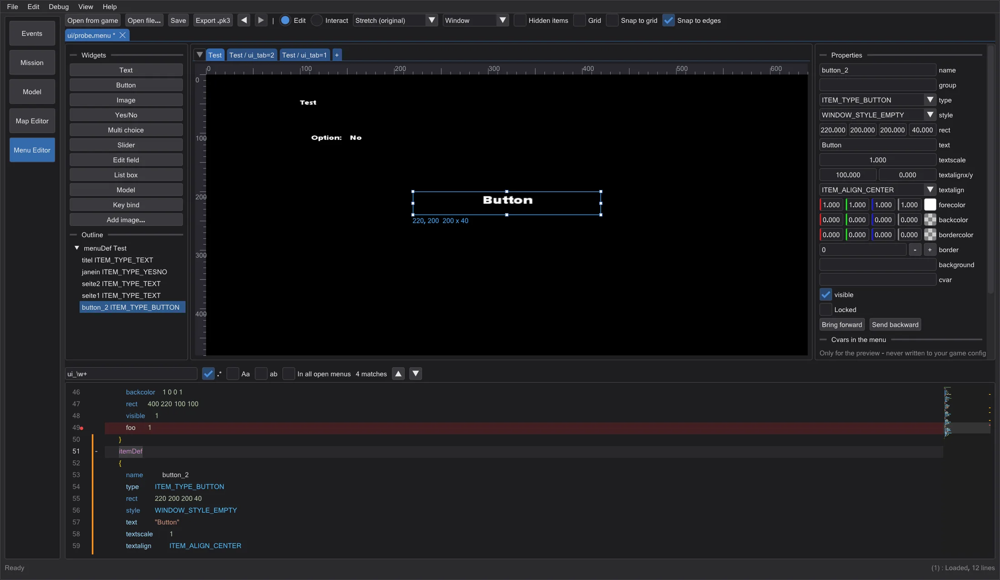

Menu editor
Edit the game's menus (.menu) as text and on a 640x480 canvas at the same time - read, drawn and operated like in the game.
Open a menu#
Click Menu Editor in the mode bar. Open from game lists every ui/ menu of the game set up in the preferences (read from the .pk3, never changed); Open file or dropping a file opens one from disk. The path decides how the file is read, exactly like the game: ui/jamp/, ui/jk2mp/ and ui/MD_MP/ with the multiplayer precompiler (#include, #define, macros, menudef.h), everything else like single player.
Engine messages shows what the game would print while loading the file, word for word and with the line (for example Unknown item keyword 'foo' Line #21). A click jumps to the line; the code editor marks it red.
Canvas and pages#

Every menuDef of the file is a tab above the canvas; items that are shown by a cvar with several values (cvarTest + showCvar, like ui_tab pages) get a tab per value. + adds a new menuDef. The canvas is the game's virtual 640x480 screen: Stretch (original) like the original game, 4:3 with bars, and preset resolutions to check the aspect ratio.
- Click selects (Shift/Ctrl adds), dragging moves, the white handles resize. Only the numbers of
rectchange in the text - comments and indentation stay. - Snap to edges snaps to edges and centres of the other items, the screen and your guides (drag them out of the rulers); Snap to grid to the grid. Alt switches snapping off while dragging, Shift keeps the direction. Arrow keys move by 1, with Shift by 10.
- Widgets inserts new items (text, button, image, yes/no, multi choice, slider, edit field, list box, model, key bind) at the end of the page's
menuDef. Add image takes a PNG, JPG or TGA asgfx/menus/<name>; it is packed into the .pk3 on export. - Properties edits the selected item; with several items it aligns, distributes and groups them. Bring forward/Send backward change the drawing order (the game draws in file order). Locked keeps an item from moving.
Interact and cvars#

Interact runs the menu like the game: hovering gives focus (mouseEnter, onFocus), a click runs the item's action, yes/no, multi choice and sliders change their cvar, and open, close, show, hide, setfocus, setcvar, setitemtext, transition ... work like in ui_shared. What needs the game (sounds, exec, uiScript) appears in Script log.
Cvars in the menu lists every cvar the menu reads or sets, the ones that control visibility first, with the values that occur. Change them to see other states. They exist only in the preview - your game configuration is never touched.
Code editor#

ui_tab shows the red box, a click on Yes/No changes ui_probe.| Ctrl + F / Ctrl + H | find / replace (regex, case, whole word, all open menus); matches are marked in the minimap |
| Ctrl + D / Ctrl + Shift + L / Alt + Click | next occurrence / all occurrences / extra cursor (multi-cursor) |
| Ctrl + Space | completion: keywords, cvars, item names, shader paths, @MENUS strings |
| F12 / Ctrl + Click | go to the menuDef or itemDef of the name under the cursor |
| Ctrl + F2 / F2 / Shift + F2 | bookmark like in the script editor (also a click in the margin) |
| Ctrl + / , Tab / Shift + Tab | comment lines, indent / outdent |
The margin works like in the script editor: orange = changed since saving, green = changed and saved, blue = back to the state when opened. menuDef, itemDef and script blocks fold with the +/- next to the line numbers. Clicking an item on the canvas jumps to its itemDef, and the cursor in an itemDef selects the item.

Save and export#
Save writes the text exactly as it is in the editor; a file opened from the game is saved elsewhere. Export .pk3 packs the menu under its game path plus your images into a .pk3. Neither ever writes into the game folders.